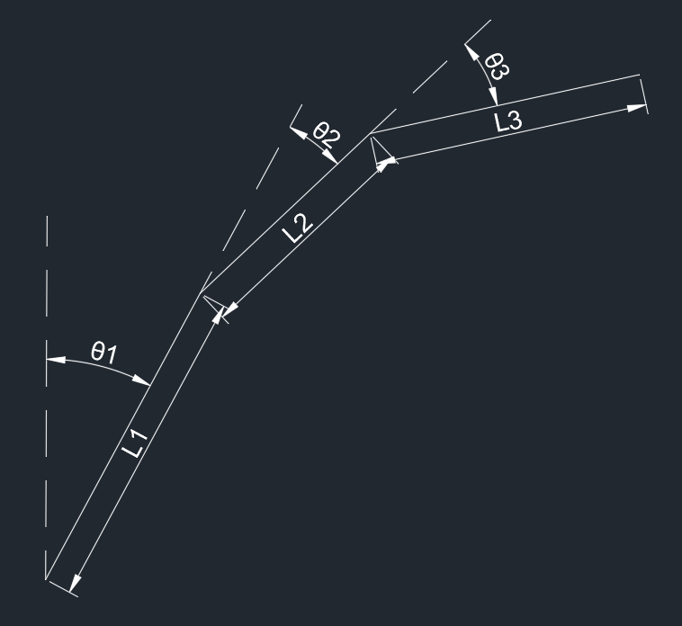

WBC全身控制器
Table of Contents
前言
概述
在 WBC 的各种功能中，任务层次结构很重要，因为它提供了一个保证，即较高的优先级任务不会由于与较低优先级任务的冲突而失败。 该方法类似于资源分配问题，其中一些资源（即机器人附件或部件）比其他部件更重要，同时试图实现多个目标。
伪逆矩阵
伪逆矩阵又叫做广义逆矩阵，是线性代数中针对矩阵的一种运算，指的是拥有部分逆矩阵的特性，但是不一定具有逆矩阵的所有特性的另一种矩阵。
假设
$$ A\in R^{n\times m}\\A^g\in R^{m\times n} $$并且满足
$$ AA^gA=A $$则 $A^g$ 就是 $A$ 的广义逆矩阵。
建构广义逆阵的目的是针对可逆矩阵以外的矩阵（例如非方阵的矩阵）可以找到一矩阵有一些类似逆矩阵的特性。任意的矩阵都存在广义逆阵，若一矩阵存在逆矩阵，逆矩阵即为其唯一的广义逆阵。
伪逆矩阵的性质
$$ AA^gA=A\\A^gAA^g=A^g\\AA^g=(AA^g)^T\\A^gA=(A^gA)^T $$零空间
在数学中，一个算子 $A$ 的零空间是方程 $A\vec{v}=\vec{0}$ 的所有解的集合，也叫做 $A$ 的核。用集合构建符号表示为
$$ Null(A)=\{\vec{v}\in V:A\vec{v}=0\} $$如果算子是在向量空间上的线性算子，零空间就是线性子空间，因此零空间是向量空间
零空间的维度称之为零度，上式中零空间维数为 $n-Rank(A)$ ，其中 $n$ 是 $\vec v$ 的行数
左逆矩阵
对于列满秩的矩阵 $A\in R^{M\times N}$ ，列向量线性无关，则矩阵零空间 $Null(A)$ 只有零向量，方程 $Ax=b$ 无解或者只有唯一解。当矩阵 $A$ 列满秩时，矩阵 $A^TA$ 为可逆矩阵，这是讨论最小二乘问题的核心。所以矩阵 $A^TA$ 为可逆矩阵，也就是存在
$$ (A^TA)^{-1}A^TA=I $$所以可以得到
$$ A_l^{-1}A=I\\A_l^{-1}=(A^TA)^{-1}A^T $$也就是 $A_l^{-1}$ 为 $A$ 的左逆矩阵，并且有
$$ A_l^{-1}\in R^{N\times M}\\A_l^{-1}A=I\in R^{N \times N} $$但是需要注意，右乘左逆矩阵一般不能得到单位阵，除非 $M=N$
右逆矩阵
对于行满秩的矩阵 $A\in R^{M\times N}$ ，行向量线性无关，则矩阵零空间 $Null(A^T)$ 只有零向量。 $A$ 的零空间的维数为 $N-M$ ，也就是拥有 $N-M$ 个自由变量，当 $N$ 大于 $M$ 时，方程 $Ax=b$ 有无穷多个解
此时矩阵 $AA^T$ 为可逆矩阵，所以存在
$$ AA^T(AA^T)^{-1}=I $$相应的得到
$$ AA_r^{-1}=I\\A_r^{-1}=A^T(AA^T)^{-1} $$也就是 $A_r^{-1}$ 为 $A$ 的左逆矩阵，并且有
$$ A_r^{-1}\in R^{M\times N}\\AA_r^{-1}=I\in R^{M \times M} $$但是需要注意，左乘右逆矩阵一般不能得到单位阵，除非 $M=N$
基于零空间投影的WBC
基本思想
基于零空间投影的WBC零空间方法出现的时间相对较早，其基本思想就是将低优先级的任务映射到高优先级任务的零空间中，从而使得低优先级任务不会影响高优先级任务的执行。
缺点
无法解决不等式的约束问题，对于不可行约束也无法有效处理，另外，在求解过程中会涉及到广义逆的求解，从而增加求解时间和难度。
雅各比矩阵
零空间投影方法通过将较低优先级的任务投影到较高优先级任务的零空间来完成严格的任务层次结构。
首先定义
- $\vec{q}\in R^N$ 关节空间向量，表示机器人关节位置的集合
- $\vec{w}\in R^M$ 任务空间向量，维度取决于不同的任务
其中，任务空间向量与关节空间向量满足运动学约束
$$ w=kinematics(q) $$对上述式子求导，就可以得到雅各比将矩阵，可以完成由关节角速度 $\dot{q}$ 映射到末端速度 $\dot w$
$$ \dot{w}=J\dot{q} $$这里选择矩阵求导的分子布局形式，则得到
$$ J\in R^{M\times N} $$当关节空间维度 $N$ 大于任务空间维度 $M$ 时，该任务被称为存在冗余自由度。对于上述存在冗余自由度的任务来说，其任务雅可比矩阵存在右伪逆矩阵 $J^+$，即满足 $JJ^+=I$ ，当雅可比矩阵列满秩，即 $Rank(J)=M$ 时，存在
$$ J^+=J^T(JJ^T)^{-1} $$所以可以得到
$$ \dot{q}=J^+\dot{w} $$零空间
当任务存在冗余自由度时，就会存在零空间。如果雅可比矩阵行满秩，零空间的维度就是其列数减去行数。零空间在数学上的定义为满足方程 $Ax=0$ 的所有 $x$ 的集合。在机器人中，就是满足任务空间速度为零的所有关节空间速度的集合，即
$$ NULL(J)={\dot{q}\in \dot{Q}:J\dot{q}=0} $$此时加入零空间矩阵 $N$ ，零空间投影矩阵 $N$ 是可以将任意的关节速度投影到对应的零空间的投影矩阵。其中满足
$$ \forall{\dot{q}},\ JN\dot{q}=0\\N=I-J^+J\not=0 $$并且零空间矩阵 $N$ 具有以下性质
$$ \left\{\begin{aligned}N^+=N\\NN=N\end{aligned}\right. $$多任务的优先级
使用零空间的定义和性质可以实现多任务的严格的优先级控制。
对于两个任务，对应任务的雅各比矩阵
$$ \left\{\begin{aligned}&\dot{w}_1=J_1\dot{q}&&\textcircled{1}\\&\dot{w}_2=J_2\dot{q}&&\textcircled{2}\end{aligned}\right. $$对于上述公式 $\textcircled{1}$ 中，可以得到
$$ \dot{q}=J_1^+\dot{w}_1+(I-J_1^+J_1)\dot{q}_0\quad\textcircled{3} $$其中 $\dot{q}_0$ 表示任意关节的空间速度向量。从零空间中的定义，可以设定 $N_1=I-J_1^+J_1$ 和 $N_2=I-J_2^+J_2$ 。并且根据零空间投影的性质可知 $J_1N_1\dot{q}_0=0$ 和 $J_2N_2\dot{q}_0=0$ ，所以 $\dot{q}_0$ 无论何值都不会对最终的关节位置造成影响，最终都会满足该任务的，也就是
$$ \forall \dot{q}_0,J_1\dot{q} = J_1J^+_1\dot{w}_1+J_1N_1\dot{q}_0=\dot{w}_1\\\forall \dot{q}_0,J_2\dot{q} = J_2J^+_2\dot{w}_1+J_2N_2\dot{q}_0=\dot{w}_2 $$将 $\textcircled{3}$ 式带入 $\textcircled{2}$ 中
$$ \dot{w}_2=J_2(J_1^+\dot{w}_1+N_1\dot{q}_0) $$此时对于 $\dot{q}_0$ 的结果可能有无数个，也可能只有一个，需要找到最优解，可以建立优化代价函数来求解
可以得到
$$ \dot{q}_0=(J_2N_1)^+(\dot{w}_2-J_2J_1^+\dot{w}_1)\quad\textcircled{4} $$将 $\textcircled{4}$ 带入到 $\textcircled{3}$ 中，此时最终关节空间速度可以表示为
$$ \dot{q} = J_1^+\dot{w}_1+N_1(J_2N_1)^+(\dot{w}_2-J_2J_1^+\dot{w}_1)\quad\textcircled{5} $$将 $\textcircled{5}$ 带入 $\textcircled{2}$ 中，此时证明
$$ \dot{w}_2=J_2\dot{q}=J_2(J_1^+w_1+N_1(J_2N_1)^+(\dot{w}_2-J_2J_1^+\dot{w}_1))\\=J_2J_1^+w_1+(J_2N_1)(J_2N_1)^{-1}(\dot{w}_2-J_2J_1^+\dot{w}_1)=\dot{w}_2 $$可见最终任务 2 也能完成
对于有 $n$ 个任务时，上述的 $\textcircled{4}$ 可以写作，此处用 $a$ 代替 $q$ 防止重复
$$ \dot{a}_0=(J_2N_1)^+(\dot{w}_2-J_2J_1^+\dot{w}_1)+(I-(J_2N_1)^+(J_2N_1))\dot{a}_1\quad\textcircled{6} $$此时得到 $\textcircled{5}$ 的形式为
$$ \dot{q} = J_1^+\dot{w}_1+N_1(J_2N_1)^+(\dot{w}_2-J_2J_1^+\dot{w}_1)+N_1(I-(J_2N_1)^+(J_2N_1))\quad\textcircled{7} $$然后将其带入到第三个任务的公式中，也就是
$$ \dot{w}_3=J_3\dot{q}=J_3J_1^+\dot{w}_1+J_3N_1(J_2N_1)^+(\dot{w}_2-J_2J_1^+\dot{w}_1)+J_3N_1(I-(J_2N_1)^+(J_2N_1))\dot{a}_1\\\Downarrow\\(I-(J_2N_1)^+(J_2N_1))\dot{a}_1=(J_3N_1)^+(\dot{w}_3-J_3J_1^+\dot{w}_1)-(J_3N_1)^+J_3N_1(J_2N_1)^+(\dot{w}_2-J_2J_1^+\dot{w}_1)+(I-(J_3N_1)^+(J_3N_1))\dot{a}_2 $$此时可以看出已经出现了一致性，所以这里直接写出最终形式，如下
$$ \dot{q}=\sum_{i=1}^{n}{\overline{N_i}\dot{q}_i}\\\dot{q}_i=(J_i\overline{N_i})^+(\dot{w}_i-J_i\sum_{k=1}^{i-1}{\overline{N}_k\dot{q}_k}) $$其中 $\overline{N_i}$ 表示组合雅可比矩阵 $\overline{J_i}$ 的零空间投影矩阵，组合雅可比矩阵 $\overline{J_i}$ 是所有任务优先级高于任务 $i$ 的任务的雅可比矩阵的组合，如下
$$ \overline{J_i}=\begin{bmatrix}J_1\\…\\J_{i-1}\end{bmatrix}\\\overline{N_i}=(I-\overline{J}_i^+\overline{J}_i) $$上述公式对应的迭代形式为
$$ \dot{q}_i = \dot{q}_{i-1}+N_{i-1}(J_iN_{i-1})^+(\dot{w}_i- J_i\dot{q}_{i-1}) $$当存在 $n$ 个有相同的优先级，通常采用如下方法求取广义速度矩阵
$$ \dot{q}=\begin{bmatrix}J_1\\...\\J_{n}\end{bmatrix}^+\begin{bmatrix}w_1\\...\\w_n\end{bmatrix} $$例子
对于一个三自由度的平面机械臂，如图所示

对其末端位置进行控制，末端位置可以根据运动学方程得到，如下
$$ x=L_1\sin(\theta_1)+L_2\sin(\theta_1+\theta_2)+L_3\sin(\theta_1+\theta_2+\theta_3)\\y=L_1\cos(\theta_1)+L_2\cos(\theta_1+\theta_2)+L_3\cos(\theta_1+\theta_2+\theta_3) $$对两边进行求导，可以得到末端速度与关节速度的关系
$$ \dot{x}=L_1\cos(\theta_1)\dot{\theta}_1+L_2\cos(\theta_1+\theta_2)(\dot{\theta}_1+\dot{\theta}_2)+L_3\cos(\theta_1+\theta_2+\theta_3)(\dot{\theta}_1+\dot{\theta}_2+\dot\theta_3)\\\dot y=-L_1\sin(\theta_1)\dot{\theta}_1-L_2\sin(\theta_1+\theta_2)(\dot{\theta}_1+\dot{\theta}_2)-L_3\sin(\theta_1+\theta_2+\theta_3)(\dot{\theta}_1+\dot{\theta}_2+\dot\theta_3) $$此时设任务 1 为控制 $x$ 方向的速度，任务 2 控制 $y$ 方向的速度，得到
$$ \dot{x}=\begin{bmatrix}L_1\cos(\theta_1)+L_2\cos(\theta_1+\theta_2)+L_3\cos(\theta_1+\theta_2+\theta_3)\\L_2\cos(\theta_1+\theta_2)+L_3\cos(\theta_1+\theta_2+\theta_3)\\L_3\cos(\theta_1+\theta_2+\theta_3)\end{bmatrix}\dot\theta=J_x\dot\theta\\\dot{y}=\begin{bmatrix}-L_1\sin(\theta_1)-L_2\sin(\theta_1+\theta_2)-L_3\sin(\theta_1+\theta_2+\theta_3)\\-L_2\sin(\theta_1+\theta_2)-L_3\sin(\theta_1+\theta_2+\theta_3)\\-L_3\sin(\theta_1+\theta_2+\theta_3)\end{bmatrix}\dot\theta=J_y\dot\theta\\\dot\theta=\begin{bmatrix}\dot\theta_1\\\dot\theta_2\\\dot\theta_3\end{bmatrix} $$然后根据上述公式可以得到，关节的速度如下
$$ \dot{q} = J_1^+\dot{x}+N_1(J_2N_1)^+(\dot{y}-J_2J_1^+\dot{x}) $$这就是末端的设定速度
小结
基于零空间投影的方法通过将低优先级任务投影到高优先级任务零空间的方法实现任务层级。零空间投影的一个缺点是无法结合不等式约束。在动作高度动态时，机器人会打破约束，使这个问题突显，基于零空间的方法假设接触约束均为等式，这在物理层面是错误的
基于二次规划的WBC
基本思想
通过将任务写成带有约束的最优化形式，同时，在引入松弛变量后，可以解决约束不可行的问题。而分层二次规划作为二次规划的级联形式，可以用来求解具有优先级的多任务问题，并且已经被证明这种求解方式可以很大程度上加快求解时间
定义
对于一个任务
$$ \dot{w}_1=J_1\dot{q} $$可以将其写作如下的最优化形式
$$ \underset{\dot{q}}{\min}\parallel J_1\dot{q}-\dot{w}_1\parallel_2 $$只考虑任务 1 时引入松弛变量 $s_1$ ，可以将任务 1 写作二次规划形式，如下
$$ \underset{\dot{q},s_1}{min}\parallel s_1\parallel_2\\s_1+J_1\dot{q}=\dot{w}_1 $$其中 $s_1$ 表示任务 1 的松弛变量，就是用来放松该任务中的不可行约束的，求解目标函数，即使该任务没有解
任务 $T_1$ 可以定义为解向量 $x\in R^n$ 上的一组线性等式或者不等式约束
$$ T=\left\{\begin{aligned}Ax-b&&s=\omega\\Dx-f&&s\leq v\end{aligned}\right. $$其中 $w$ 和 $v$ 是要最小化的松弛变量，当同时解决一组任务 $T_1,…,T_n$ 时，可以选择互相加权，也可以按照严格的优先顺序解决
严格的优先顺序求解
假设求解p个任务得到了最优解 $x^\star$。为了保证严格的优先级划分，下一个解 $x_{p+1}$ 是在所有高优先级相等约束的零空间 $Z_p=\Nu(\underline{A}_p)$ 中寻找，其中 $\underline{A}_p=\begin{bmatrix}A_1^T…A_{p}^T\end{bmatrix}^T$。最终得到 $x_{p+1}=x^*+Z_pz_{p+1}$，其中 $z_{p+1}$ 是一个位于 $Z_p$ 行空间中的向量。求解一个新的任务 $T_{p+1}$ 意味着从下面的二次规划问题中计算 $Z_{p+1}^*$ 和 $V_{p+1}^*$
$$ \underset{z_{p+1},v_{p+1}}{min} \frac{1}{2} ||A_{p+1}(X^*+Z_pz_{p+1})-b_{p+1}||^2+\frac{1}{2}||v_{p+1}||^2 $$其中
$$ \left\{\begin{aligned} D_{p+1}(X^*+Z_pz_{p+1})-f_{p+1}&\leq v_{p+1}^*\\D_p(X^*+Z_pz_{p+1})-f_p&\leq v_{p}^*\\...\\D_1(X^*+Z_pz_{p+1})-f_1&\leq v_1^*\\v_{p+1}&\geq\end{aligned}\right. $$设
$$ \xi_p^T=\begin{bmatrix}z_p^T&&v_p^T\end{bmatrix} $$上述问题可以写作
$$
\left{\begin{aligned}&\underset{\xi_{p+1}}{min}\frac{1}{2}\xi_{p+1}^TH_{p+1}\xi_{p+1}+c_{p+1}^{T}\xi_{p+1}\&\widetilde{D}{p+1}\xi{p+1}\leq\widetilde{f}_{p+1}\end{aligned}\right. $$
其中
$$
\left{\begin{aligned}H_{p+1}&=\begin{bmatrix}Z_p^TA_{p+1}^TA_{p+1}Z_p&&0\0&&I\end{bmatrix}\c_{p+1}&=\begin{bmatrix}Z_p^TA_{p+1}^T(A_{p+1}X^-b_{p+1})\0\end{bmatrix}\\widetilde{D}{p+1}&=\begin{bmatrix}D{p+1}Z_p&&-I\D_pZ_p&&0\.\.\D_1Z_p&&0\0&&-I\end{bmatrix}\\widetilde{f}{p+1}&=\begin{bmatrix}f{p+1}-D_{p+1}X^\f_p-D_pX^+v_p^\.\.\f_1-D_1X^+v_1^\0\end{bmatrix}\end{aligned}\right. $$
上式就是基于零空间的分层二次规划表达形式。通过对上述分层二次规划问题进行求解，就可以得到期望的状态变量 $x^*$，其中包含机器人的速度、加速度和接触力等信息，再结合机器人动力学模型计算得到所需关节力矩，给到控制器，就可以对具有优先级的多任务问题进行控制，实现关节空间的轨迹跟踪，进而完成任务空间中规划的任务。
后记
实际上，上述所写的控制器并不是很完善，很多内容在网上几乎找不到资料。当前比较常用的 WBC 应该是 MIT 开源的 minicheetah 中的算法了吧。
以后看到相关资料之后再更新叭